| marital | tv |
|---|---|
| No answer | 2.56 |
| Never married | 3.11 |
| Separated | 3.55 |
| Divorced | 3.09 |
| Widowed | 3.91 |
Data wrangling I
POL51
Haley Daarstad
University of California, Davis
October 16, 2026
Plan for today
Review Data Visualization
Wrangling and pipes
Subsetting data
Graph 4: the barplot
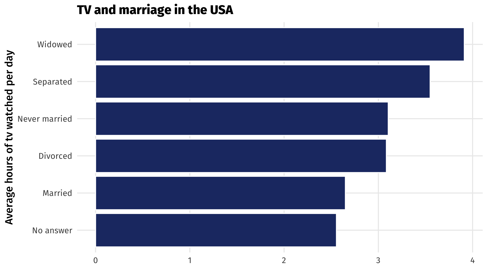
Barplots place a category (place, country, person, etc) on one axis and a quantity (amount, average, median, etc.) on another
Useful for making comparisons, highlighting differences
Why would there be differences across TV consumption?
The grammar of barplots
| Data | Aesthetic | Geometry |
|---|---|---|
| tv | x | geom_col() |
| marital | y | geom_col() |
You could switch the x and y mapping around, but I think categories look better on the y-axis
The barplot
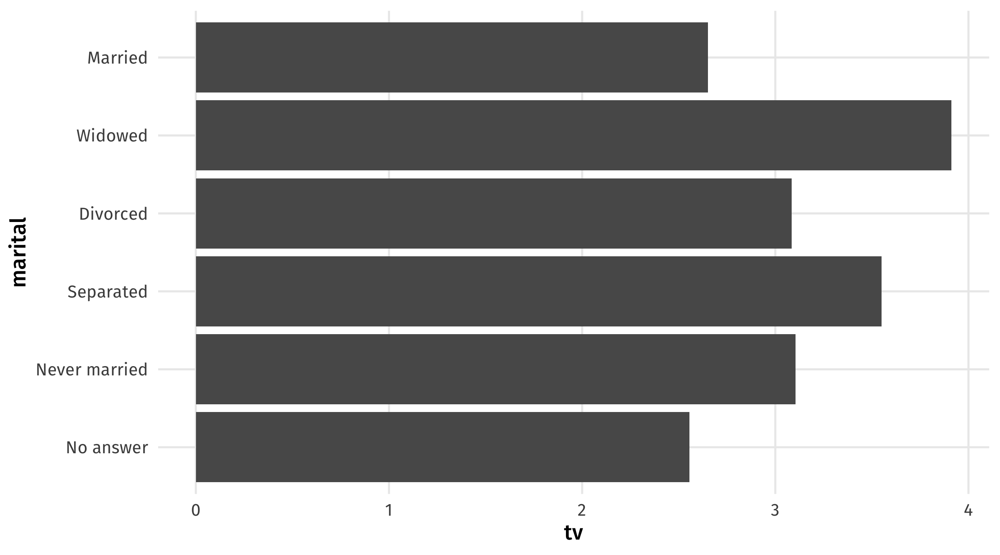
Graph 5: the boxplot

Boxplots compare distributions of continuous variables across groups
they show us more than the barplot which only gives us a quantity for each group
Compare distributions: the boxplot
Boxplots contain a lot of info 🥵:
- bold line is the median observation
- box is the middle 50% of observations
- thin lines show you min and max value, except…
- the dots, which are outlier observations
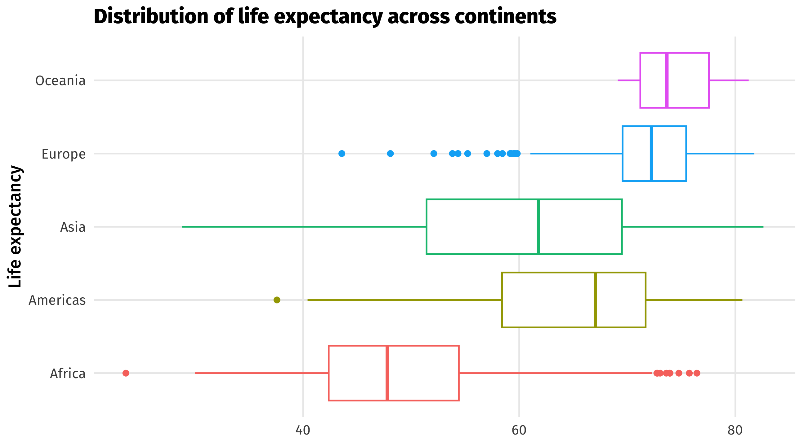
interpret
The grammar of boxplots
| continent | lifeExp |
|---|---|
| Asia | 43.83 |
| Europe | 76.42 |
| Africa | 72.30 |
| Africa | 42.73 |
| Americas | 75.32 |
| Data | Aesthetic | Geometry |
|---|---|---|
| contient | y | geom_boxplot() |
| lifeExp | x | geom_boxplot() |
You could switch the x and y mapping around, but I think categories look better on the y-axis
The five(-ish) graphs
| Graph | aes() | geom_ | Purpose |
|---|---|---|---|
| Scatterplot | x = cause, y = effect | point() | Relationships |
| Time series | x = date, y = variable | line() | Trends |
| Histogram | x = cont. variable | histogram() | Distributions |
| Barplot | y = category, x = quantity | col() | Compare amounts |
| Boxplot | y = category, x = cont. variable | boxplot() | Compare distributions |
Know how and when to use which!
Making better graphs
We’ve barely scratched the surface; there’s many more aesthetics, geometries, and layers in
ggplot()Here are some of my favorite ones
And some ideas for making graphs better
Showing “movement” using panels
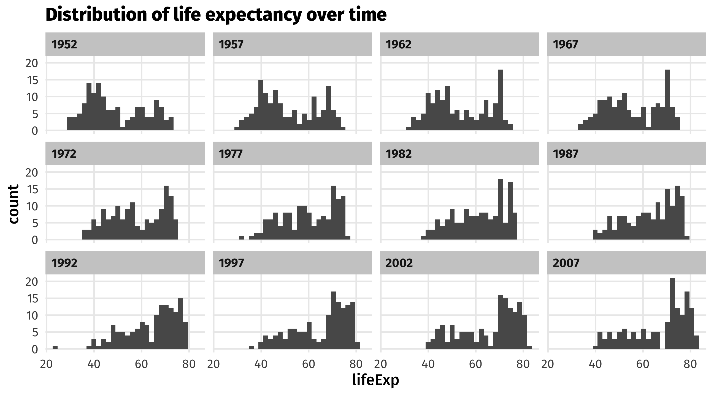
We can use panels to show movement of a variable across time, space, etc.
What is this graph showing us?
Using facet_wrap
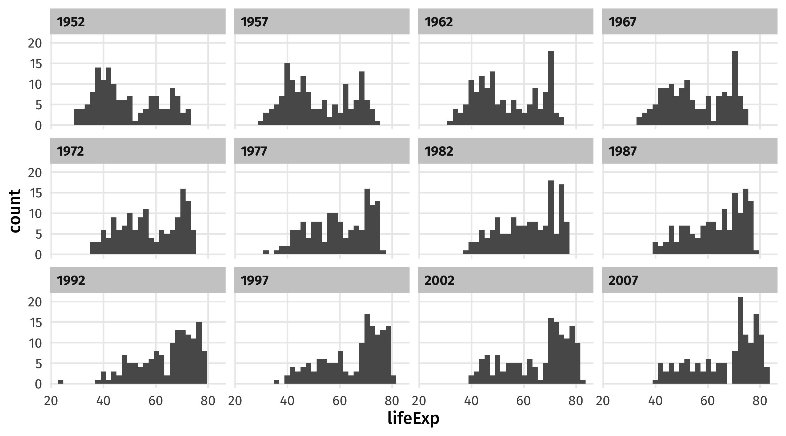
Make sure the facetting variable is wrapped in vars()!
Make aesthetics static
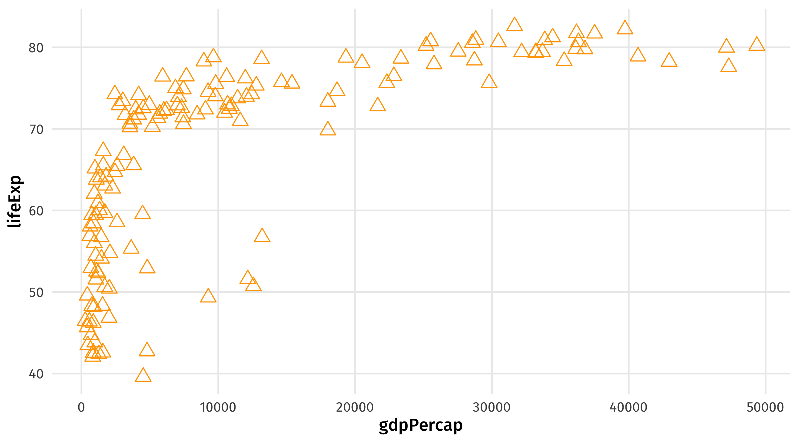
Take your aesthetics out of aes() and into geom() to make them static
Use different color and fill scales
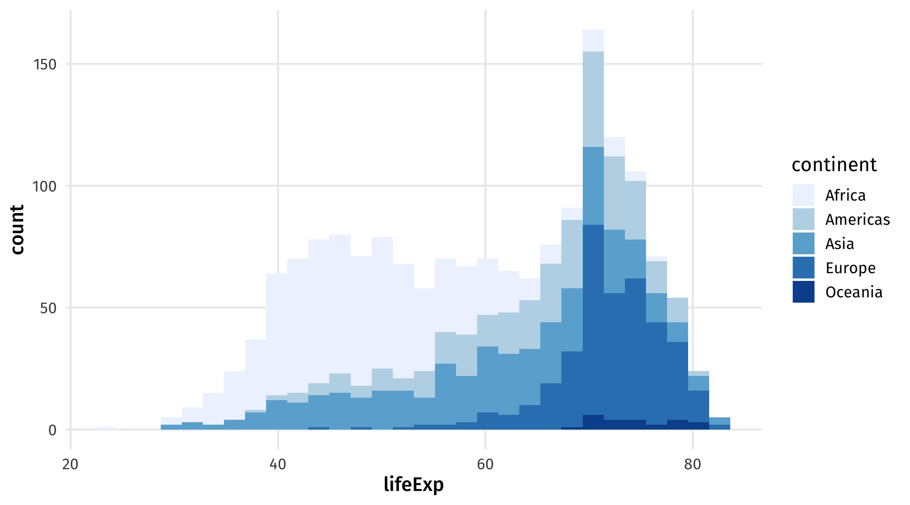
scale_fill_brewer() for fill, scale_color_brewer for color
My favorite scale (right now)
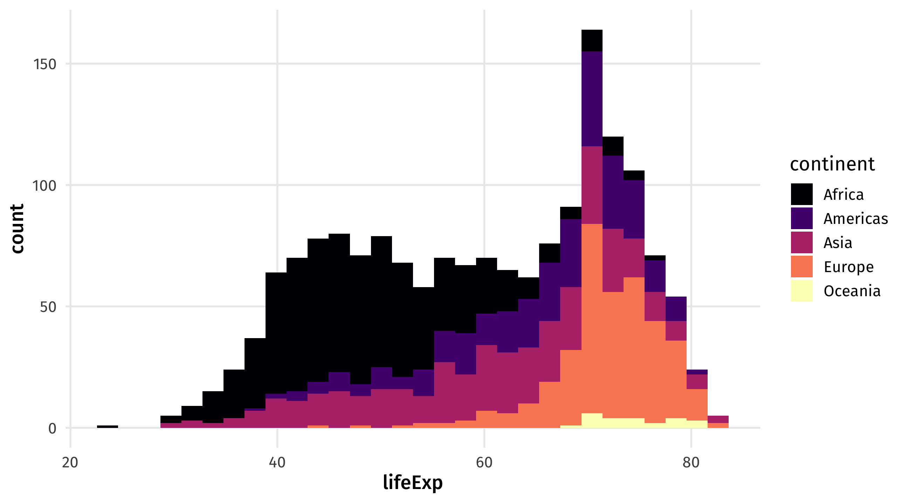
scale_fill_viridis_d for discrete variables, scale_fill_viridis_d for continuous
Many other themes
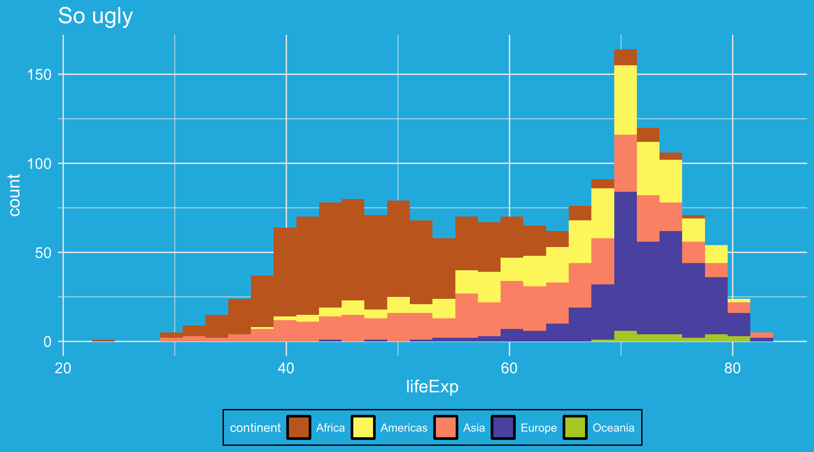
theme_spongeBob() from tvthemes package, many more online
Review
Scatterplots?
geom_point(): two continuous variables (x and y)Time series?
geom_line(): one time/date variable (x) + one continuous variable (y)Histograms?
geom_histogram(): one continuous variable (x)Barplots?
geom_col(): one categorical variable (x) + one continuous variable (y, already summarized)Boxplots?
geom_boxplot(): one continuous variable (y), often split by one categorical variable (x)
What is data-wrangling?
…the process of transforming and mapping data from one “raw” data form into another format with the intent of making it more appropriate and valuable for a variety of downstream purposes such as analytics… Data analysts typically spend the majority of their time in the process of data wrangling compared to the actual analysis of the data. – Wikipedia
Most of your time working with data will be spent wrangling it into a usable form for analysis
Pipes: connecting data to functions
You’ve seen these before…
What are pipes?
Pipes link data to functions
They look like this
%>%, or|>Definitely use keyboard shortcuts
- OSX: Cmd + Shift + M
- Windows: Ctrl + Shift + M
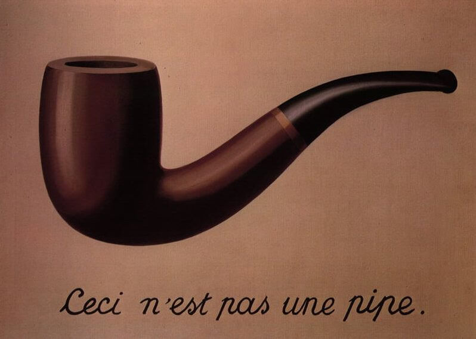
Why pipes?
With pipes: 😍
Without pipes: 🤢
Both produce the same output, but pipes make code more legible
Making sense of pipes: “and then…”
You can read the pipe as if it said “and then”…
Take the data object
movies, AND THENfilterso genre1, genre2, or genre3 equal HORROR, AND THENmutateso that…
Subsetting data and logical operators
Our first wrangling function: filter()
filter() subsets data objects based on rules
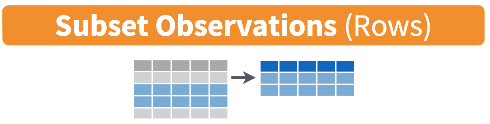
Why filter?
Why filter?
Lots of real-world applications: finding flights, addresses, IDs, etc.
Sometimes we want to focus on a specific subset of data: the South, Latin America, etc.
Useful to deal with common problems: outliers, missing data, strange responses
Using filter()
To use filter(), we need to tell R which observations we want to include (or exclude) using rules
Making the rules: logical operators
Rules filter data based on whether variables meet certain criteria
Rules rely on logical operators:
Equal to, not equal to, less than, more than, included in, etc.
Observations that meet the rule are returned; those that are not are dropped
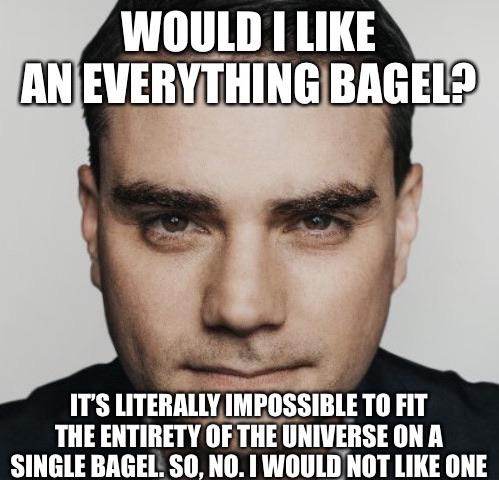
The logical operators
| Operator | meaning |
|---|---|
| == | equal to |
| != | not equal to |
| > | greater than |
| < | less than |
| >= | greater than or equal to |
| <= | less than or equal to |
| & | AND (both conditions true) |
| | | OR (either condition is true) |
| %in% | IN (in the set of) |
Using filter()
Say we have some data on 🍎
| name | color | pounds | sweet |
|---|---|---|---|
| Fuji | red | 2 | TRUE |
| Gala | green | 4 | TRUE |
| Macintosh | green | 8 | FALSE |
| Granny Smith | red | 3 | FALSE |
Apples
# A tibble: 4 × 4
name color pounds sweet
<chr> <chr> <dbl> <lgl>
1 Fuji red 2 TRUE
2 Gala green 4 TRUE
3 Macintosh green 8 FALSE
4 Granny Smith red 3 FALSENote
The output reports how many rows and columns our dataset has (4 rows x 4 columns)
Green apples
# A tibble: 2 × 4
name color pounds sweet
<chr> <chr> <dbl> <lgl>
1 Gala green 4 TRUE
2 Macintosh green 8 FALSENotice words are in quotations!
Notice that the number of rows has decreased: 2 x 4
Green and unsweet apples
# A tibble: 1 × 4
name color pounds sweet
<chr> <chr> <dbl> <lgl>
1 Macintosh green 8 FALSENotice TRUE/FALSE are all-caps!
Apples that aren’t green
# A tibble: 2 × 4
name color pounds sweet
<chr> <chr> <dbl> <lgl>
1 Fuji red 2 TRUE
2 Granny Smith red 3 FALSEThe ! symbol negates: not equal to
At least 4 pounds but less than 6
# A tibble: 1 × 4
name color pounds sweet
<chr> <chr> <dbl> <lgl>
1 Gala green 4 TRUE Notice: at least implies greater than or equal to
Combinations: The OR (|) operator
“Observations where either this is true OR that is true”
Combinations: the AND operator (&)
The & operator can be used to combine rules
Returns observations where both rules are true
“Apples that are red AND sweet or green AND sour”:
%in%
The %in% operator is super powerful
It returns observations that belong to a set
%in%
Make a list of countries and return observations that match any of them
Note
To make a “list” of items (a vector), use c()
👑 World leaders Example 👑
# A tibble: 1 × 16
country gwcode leader gender year yr_office age edu mil_service combat
<chr> <dbl> <chr> <chr> <dbl> <dbl> <dbl> <fct> <dbl> <dbl>
1 VNM 815 Thanh Th… M 1889 1 11 Seco… 0 0
# ℹ 6 more variables: rebel <dbl>, yrs_exp <dbl>, phys_health <dbl>,
# mental_health <dbl>, will_force <dbl>, will_force_sd <dbl>👑 Cars Practice 👑
Open an r script, open the code book to find the variable names, and filter to find the car model.
Next Using the mtcars dataset, identify:
- A manual car, with 6 cylinders and the miles per gallon is less than 20.
Note
?mtcars to see the codebook.
👑 Cars Practice Answer 👑
mpg cyl disp hp drat wt qsec vs am gear carb
Ferrari Dino 19.7 6 145 175 3.62 2.77 15.5 0 1 5 6